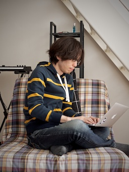

<section class="toppage">
  <section class="sidebar">
    <p></p>
    <p>高橋 啓治郎</p>
    <p>ゲーム、映像、音などの分野を中心にいろいろやっているプログラマーです。最近は Unity の中の人としての活動が多め。</p>
    <p>詳しい経歴などは<a href="https://gist.github.com/keijiro/3221531">こちら</a>をどうぞ。</p>
  </section>
  <section class="index">
    <ul class="listing">
      {% for post in site.posts %}
      <li>
        <span>{{ post.date | date: "%B %e, %Y" }}</span><a href="{{ post.url }}">{{ post.title }}</a>
      </li>
      {% endfor %}
    </ul>
  </section>
</section>
